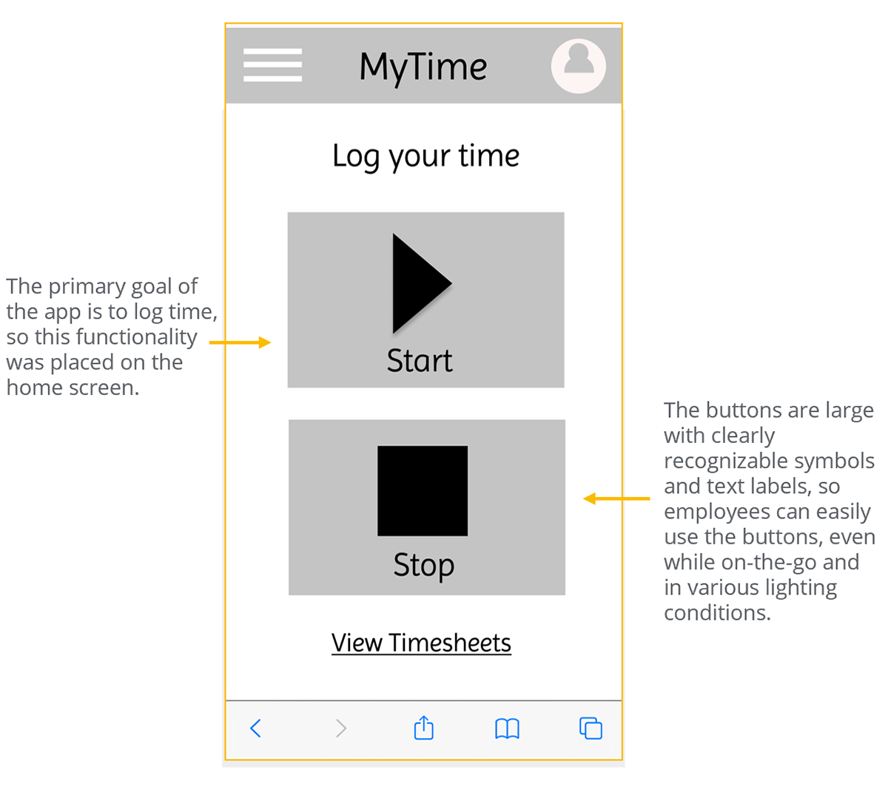
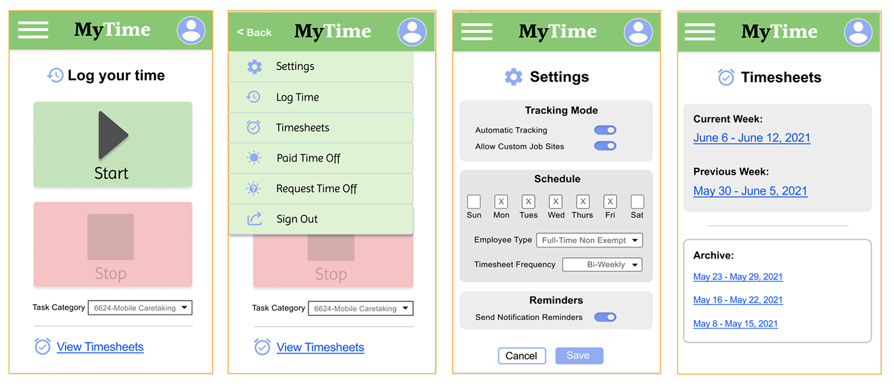

UI/UX Designer
 Back to Home
Back to HomeHospital Timesheet App Design UI/UX Design Case Study
The product:
“MyTime” is a smartphone hospital timesheet application for hospital employees with irregular hours and multiple job sites.
Project duration:
May 2021 – July 2021
The problem:
Hospital employees with irregular job schedules or multiple job site locations found it difficult to track their work time. They often forgot to log their time, especially when being called in at the last minute or having to travel to alternate job sites. This resulted in timekeeping inaccuracies, wasted time and stress, and extra work for timekeeping administrators.
The goal:
The goal is to make it easier for hospital employees to remember to track their time, or to enable the app to track their time automatically based upon GPS, depending upon the user’s preference.
My role:
- User research
- Wireframing (low fidelity and high fidelity)
- Prototyping (low fidelity and high fidelity)
- User testing and analysis
Responsibilities:
User research, market research, wireframing, mockups, prototyping, user testing and analysis
User research
I performed a Moderated Usability Study with 5 hospital employees each in 2 rounds of user testing. In the 1st round of testing, users were asked to interact with a low-fidelity prototype presented on a smartphone and were verbally asked a series of prompts and prompt follow-up questions. In the 2nd round, users were asked to perform additional tasks with a high-fidelity prototype.
Assumptions going into user testing were that the app would be helpful to hospital employees and that the app was easily to navigate. Overall, the testers confirmed these assumptions and were pleased with the app capabilities. However, there were some issues raised when it came to filling out timesheets. Based upon this feedback, these issues were corrected with multiple iterations of design updates.
User Pain Points
1. Doctors can get called into work at various hours of the day or night. This makes it hard to remember to log work time. Enabling reminders and automatic timekeeping based upon GPS location will be included capabilities in the app design.
2. Mobile employees are always on-the-go and have multiple job sites, which can make tracking time more difficult. Enabling reminders and automatic timekeeping based upon GPS location will be included capabilities in the app design. For manual timekeeping, the app will have easily visible large buttons on the home page to start/stop work time.
3. Users must go into the main office to request time off on a desktop computer. Users found it helpful to be able to request time off through the phone app, instead of having to rely on the computer at work. The design will include a menu option to enable users to easily request time off.
Personas
Problem statement:
Steve is a busy doctor who needs to accurately track his irregular work schedule
because he sometimes forgets when he gets called into work at all hours of the night.
User journey map
I listed out the detailed tasks in chronological order that our personas need to perform, in order to understand the process and empathize with pain points. This helped determine how the app should work and how it can resolve these pain points.
User flow
I thought through the logical order of the tasks that user must complete. This helped determine how the app should work and how it can resolve their pain points.
Paper Wireframes
As I sketched design ideas for the Settings screen, which is how users can set automatic timekeeping, I thought about each step the user takes through their workday. The screen designs need to make timetracking and settings customizations easier for users.
Digital wireframes
Wireframes were created in Figma to illustrate how the app would work. Users needed to quickly access the start/stop timer to easily log their work time. So, providing these controls directly on the home screen and using large clearly marked buttons allow users to easily access this functionality while on-the-go.

A hamburger menu was designed for the app so that users completing various tasks could easily find the option they need, no matter where they are in the app.
Low-fidelity prototype
Wireframes were designed for the main user flows and interactions were created between the screens so we can visualize how the app would be navigated.
Usability Study
Study type: Moderated usability study of prototype Participants: 5 hospital employees: 3 female, 2 male, ages ranging from 30s to 50s Location: Carrollton, VA Length: Over two days, in five 20-minute sessions
Usability Study Findings:
1. It is easy to log time manually. Users found it very easy to start and stop logging their time manually on the home screen.
2. Users found the hamburger menu easy to use. Users found it very easy to access requested tasks through the hamburger menu.
3. It is helpful to have the option to request time off through the phone app. Users found it helpful to be able to request time off through the phone app, instead of having to rely on the desktop computer at work.
4. It is important to view the list of timesheets. Most users found it important to be able to see a list of the current and recent previous timesheets.
Mockups
Users indicated that it was important to view timesheets and request time off, and they displayed comfort with using the hamburger menu. So, I added the “Timesheets” and “Request Time Off” options to the menu.
Mockups were refined based upon the usability studies, as well as accessibility considerations and design principles. Through multiple iterations, the mockups became high fidelity, and incorporated various Gestalt principles.
Mockup Examples

Design System
I added visual components and assets to a sticker sheet design system, to improve consistency and branding and to help designers and developers
High-fidelity prototypes
Accessibility considerations
1. The buttons for logging time are large and easy-to-use, particularly for employees who may be on-the-go, distracted, or in different environments. Using a combination of symbols, color, and labels to mark the Start and Stop buttons allow for various users to utilize.
2. The app is organized clearly. Each screen is easily identified with a bold header, and the information below is organized logically so that users of varying abilities and using accessibility devices can easily navigate the app.
3. Visual elements such as icons and contrast ratios have been considered. Icons help users navigate and recognize the various tasks to complete within the app. Contrast ratios have been tested so that content can be read by those with visual impairments.
Takeaways
Impact:
The app makes it easy for hospital employees with irregular work hours and multiple job sites to keep track of their hours while on-the-go. This improves efficiency for the employees, as well as for timekeeping administrators.
“I wish MY timesheet app was this easy!” -user
What I learned:
I learned that, by listening to and understanding real users, one can help solve their pain points with simple design changes.
Next Steps
1. Further user testing for more advanced tasks in the app, such as setting job site locations with GPS
2. Build out this GPS capability based upon the user feedback
3. Share updates with the stakeholders and begin product development
Back to Home
To Top of Page
Contact
Email: jenlycke@gmail.com
Phone: (757) 477-1244